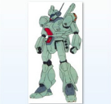
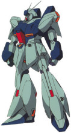

杰达： 由于先后经历了格利普斯战争和第一次新吉恩战争，使地球联邦在经济和军事上遭受了巨大的损失，战时由泰坦斯和奥古各自开发的多种MS也使联邦的后勤面临严峻的考验，寻求一型廉价高效的量产型MS变得异常迫切。 因此这段时间的MS开发预算的都大幅度削减，设计时不得不考虑降低成本。 而RGM-88X 杰达（Jeddah）便是应用了RX-178高达Mk-Ⅱ的技术所制造的后继机、同时作为RGM-89杰刚原型机而被设计出来的MS。 试验机共制造了6架，1号机与2号机被解体成零部件使用，其余4架均配属于隆德·贝尔队所属的格拉普级巡洋舰拉·萨姆，参加了对艾格姆的战斗。 其中3号机由阿姆罗·雷驾驶，4号机由乔·塞依驾驶，5号机由卡宁姆·休驾驶，被艾格姆的塞拉·曼提拉上校击坠，6号机由奥尔扬·布罗姆克福特驾驶。 然而，有关资料指出（资料出自B-CLUB的有关说明），由于杰刚在实战中被指出有很多缺陷，尤其是贫弱的装甲，为了应对紧急情况，杰达被修改为RGM-90改良型杰达并投入量产，一起被配备于地球上的主要基地。 一般认为，RGM-88X/RGM-90最后产量估计40驾左右，但正确的数量只有联邦高官知道。
机体型号：RGM-88X
机体类型：泛用试作型MS
所属：联邦
初次配备：U.C.0093
推进力：4×20300kg
固定武装：火神炮×2；光束剑×2；三联装手部榴弹发射器×2
选用手部武器：盾牌，光束步枪

杰刚： 经历格利普斯战争和第一次新吉恩战争后，忙碌于又一次军备重建中的地球联邦开始考虑MS部队主力机型的现状与未来，由于军备预算的大幅缩水，让新时期的MS生产、运用思想重新回归低成本和高泛用性这两大基本点。 最终，联邦以吉姆系一贯的高通用性和拓展性为参照，设计了一款全新的泛用型MS。 新机型的正式型号为RGM-89 杰刚（Jegan），于U.C.0089年末起下线开始逐步装备部队。 杰刚的设计以吉姆系为蓝本，整体设计风格简练，以高泛用性及扩张性为基本指导思想。 而为了最大程度节约成本，该型机甚至没有使用高达尼姆合金，而是使用了最新型的钛合金陶瓷复合装甲，当然，这种新改进的钛陶复合装甲的防御性虽然不及高达尼姆γ合金，但依旧有在高达尼姆α合金之上的性能。 推进系统上，杰刚最大的特征就是背包大型化，大大增强了机体的续航时间。 背包上部两侧设置同高达Mk-Ⅱ及吉姆Ⅲ类似的可动悬臂，同时肩部侧面安装大推力喷口，提升侧向加速能力。 武装方面，主武装是标准的光束步枪和光束剑的组合。 在BR-S-85-C2光束步枪的基础上，阿纳海姆的技术人员还通过加长枪管内收束\加速段长度等手段加强了威力，隆德·贝尔队装备的杰刚后来就创造出了直击造成新吉恩军的AMS-119基拉·多加的持盾手连同盾牌一起被破坏的毁伤记录，可见威力相当可观。除了光束步枪、光束剑、头部火神炮等传统的标配外，机体腰部两侧还设置了多用途挂架，一般采用左侧安装三联装手榴弹（带有小型动力装置），右侧放置光束步枪，也有可用于收纳三个步枪弹夹的弹夹盒，具体搭配方式根据任务需要做调整。 杰刚初次公开后，便被业界冠以“MS历史十年总结”的美称，此后，由精英部队开始逐渐列装，在服役期间以优秀的表现证明了其完全符合杰作机这一称号。 驾驶过此机的著名机师除隆德·贝尔队上以勇猛而闻名的女机师凯拉·苏中尉外，还有曾担任过RX-79BD-1蓝色命运一号机机师的加岛勇上校等。 从U.C.0089年初次展示后的三十余年间，杰刚一直作为联邦军的主力MS而在服役，并出现了为数不少的衍生机型。 主要原因当然是这三十年间没有什么大的战事，军费预算一直卡得很紧，而开发新型MS所需费用又比较高有密切关系。 但其优越的可靠性、平衡性、泛用性已经足以满足联邦军在这个时期内的需求，才是它被不断反复改修，直到U.C.0120年以前该机仍作为一线机体使用的根本原因。
机体型号：RGM-89
机体类型：泛用量产型MS
制造商：阿纳海姆电子公司
所属：联邦
内部环境：标准式全视野监控
尺寸全高：20.4米
本体重量：21.3吨
全备重量：47.3吨
发动机功率：1870KW
推进力：2×12700KG+2×9200KG+2×8800KG=61400KG,姿势制御喷嘴数:19
加速度：1.03G
传感器探测有效半径：14200米
固定武装：光束军刀×1；3连装手雷夹×1；腰部3连装手榴弹
选用武装：头部火神荚舱系统；专用盾牌（内藏2连装小型导弹发射器）
选用手部武器：专用光束步枪

灵格斯： 0080年代后期，随着奥古与阿纳海姆电子公司合作的“Z计划”的推进所开发出来的MSZ-006Z高达的设计方案，使后来的MS开发工作受益匪浅。 Z高达无论在空间战斗还是在重力下战斗中都有高等级的机体性能，而且在当时能进行大气圈突入的TMS之中拥有首屈一指的攻击力。 拥有非常复杂的变形机构的Z高达，MS和WR两种形态都持有非常高的机体性能，它的出现使MS的使用范围得到了划时代的扩大。 这部机体完成时，颠覆了当时的设计者的设计常识，由于构造材质的提高，才使其高效率的内部构造骨架得以实现，所以如果说之后大多数的MS使用的都是从开发Z高达途中派生出来的机构构造的话，一点也不过分。 但是，与优秀的性能、战绩相反，Z高达并没有实现量产化。 当然，在“Z计划”的范畴以外，还是存在有能变形为航宙战斗机、称之为量产机、试作机的设计方案，并运用且消耗在侧面战斗之中。 唯一由奥古的协力组织卡拉巴生产了少数的Z直系改造机Z Plus系列，但与真正意义上的量产来说，其规模还是过小。 以公正的观点来讲，Z高达的最大特征“变形”，正是Z高达不能实现量产的最大障碍之所在，所以，设计人员开始摸索将变形这一“机构”向“机能”方面转换的手法，换句话说，就是将从MS变到WR的变形机构省略掉，使WR形态时的机能用附加其他装备来代替的方法。 RGZ-91 灵格斯（Re-GZ）就是由阿纳海姆所开发的、将Z高达的MS形态复制过来的试作型MS，名称为“Refine Gundam Zeta（精简“Z高达”之意）” 其装备着将变形时的机能集于一体的附加装备BWS（Back Weapon System），用以代替WR形态时的机能。 其装备着将变形时的机能集于一体的附加装备BWS（Back Weapon System），用以代替WR形态时的机能。这个设计方案，与Z计划的MSZ-006RZ Plus R的开发提案相接近，出发思想类似于RX-78-2高达的“G堡垒”形态时的“G装备”，这个经过数年才进行了实际制造的灵格斯，各部材都使用了最新的技术，再加上搭载有准塞可缪装置生物传感器，达到了与原型Z高达相匹敌的机体性能。 灵格斯的头部模块布置与Z高达有着异曲同工之处，除了将V字天线替换为棒状天线外，其余保留了Z系列机传统设计。机体依旧采用双眼布局的主摄影机，头顶则并未配置联邦系MS惯用的辅助摄影机，相反实验性的导入射击用激光传感器。头部模块配置的监控链接装备，探测终端较多选用杰刚系零配件。 虑到灵格斯本体与B.W.S联动作战的战术需求，头部模块布置了可实施最低限度远程诱导和双向通信系统。胸部单元配置了更为小型化的发电机，进一步优化性能参数。与原型机不同，灵格斯无需考虑变形机构所需的复杂设计工艺，稳定的结构布局有利于提升机体运行稳定性。腰部正面投影处和股关节布置了喷嘴用于姿势制御，侧裙甲两侧挂点配备的可动式导弹发射器确保了灵活的发射角度。 机体背部采用尾状安定翼（Tail stabilizer）布局，代替了Z高达FXA-01 飞行装甲（Flying Armour）设计，安定翼两侧配置的主推进器充当“动力核心”角色，两具推进器总推力高达28400kg。肩部装甲由于不必顾虑变形等因素而增加了装甲覆盖面积，左右手腕挂点均配备了榴弹发射器，弹种多采用无诱导式，而以骨架为首的零配件依旧以杰刚系生产的标准化部件为主，差异在于装甲材质选用当时最新型的高达尼姆系合金。 然而，灵格斯所采用的BWS系统无法做到双向变形，在利用WR高速抵达战场后，变形成为MS之后便无法再变回WR状态，一面是成功降低成本和难度，实现量产，一面也说明阿纳海姆对于该机的能力十分信赖，认为抵达战场后便不需要考虑高速撤离。格利普斯战争以后，Z系列的机体就开发的差不多了，这个系列作为高性能MS的代表得到了普遍的认同。灵格斯作为这个系谱的连带机种——特别是搭载了BWS以后，WR形态时的运动性、长距离巡航性、搭载火力等都得到了高水平的发挥。 应时势的需要，即将达成量产化。在第一次新吉恩战争之后，潜藏在各殖民地的反地球联邦军组织“エグム”、“NSP”所策划的小规模抵抗运动频发，联邦军为了守卫地球圈的平稳，将开发重点放在了次期主力机型上，这样，灵格斯的量产得以实现。 U.C.0092年12月22日，由夏亚·阿兹纳布尔所率领的新吉恩军队宣布占领甘泉，联邦军首脑将其作为紧急事态对待，因此，将原配备给外围新兴精锐部队隆德·贝尔队的高达系MS秘密隐藏起来。12月25日在联邦军高层的指示下将灵格斯作为精英量产机初次配备于隆德·贝尔队。 但是在第二次新吉恩战争中，灵格斯与新吉恩军的NT专用MS——MSN-04沙扎比、MSN-03乍得·多加陷入了苦战，联邦军的王牌机师阿姆罗·雷也深感此机性能与对方存在很大差距，这也意味着灵格斯已是一台落后于时代的机体了，且有多名女性驾驶员（凯拉·苏、珍·吉）于此机战死，因此同时又是一台悲哀的机体。 此外，在0096年的拉普拉斯之争时，在隆德·贝尔队的旗舰拉·凯拉姆的格纳库上再次看到了该机得身影。隆德·贝尔实际上通过某种渠道从阿纳海姆处获得了MSZ-008 ZⅡ的可变型可动骨架，时任拉·凯拉姆机械整备班班长的阿斯托纳吉·梅多兹（Astonaige Medoz）提议利用这款骨架和预备零件，并搭载塞可谬系统现地改装一架新机，即RGZ-91AO Re-GZ Another Operation，至于是否完工尚不明了，也没有任何该机参与实战的记录。
机体型号：RGZ-91 机体类型：泛用攻击型试作MS 制造商：阿纳海姆电子公司 所属：联邦 初次配备：U.C.0092